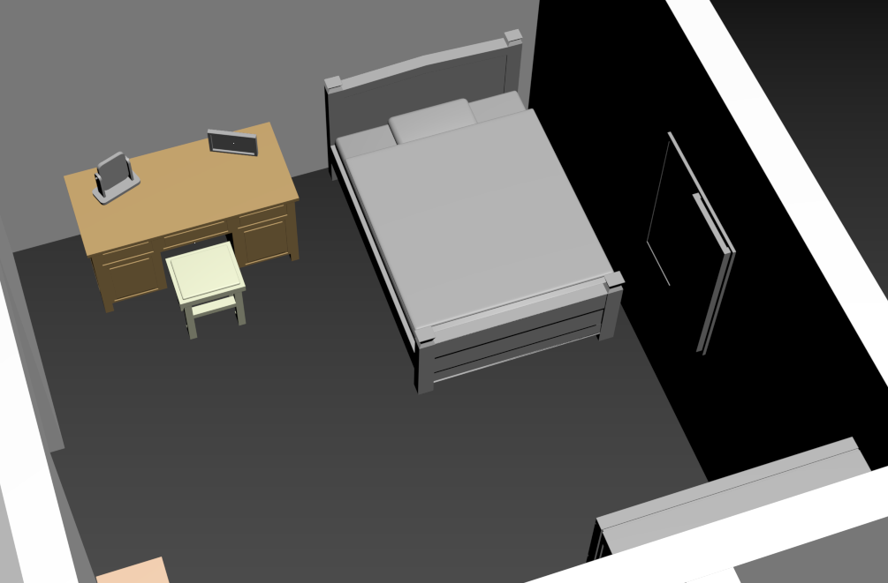
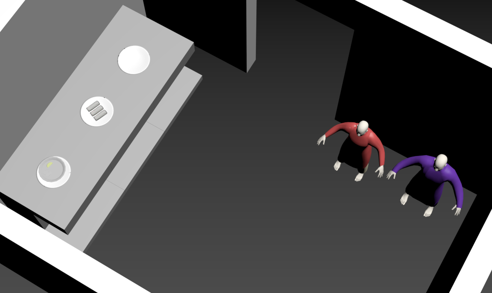

展覽簡介
《築夢異鄉》是一場以虛擬形式進行的沉浸式展覽，邀請觀眾走進在台外籍移工的日常世界。透過互動科技、空間模擬與多媒體敘事，我們呈現他們的背景、挑戰與貢獻，帶領觀眾跨越語言與文化的隔閡，深度理解這群來自他鄉的人如何成為台灣社會不可或缺的一部分。
目的
- 提升大眾對外籍移工議題的關注，特別是語言障礙、勞動環境、社會偏見等問題。
- 破除對移工的刻板印象，推動多元文化的尊重與共融。
- 引發社會對於制度改善的思考與行動。
我們希望透過沉浸式的虛擬體驗，使參觀者「看到、聽到、感受到」移工的現實處境，進而喚起大家的同理心。
展覽內容
1 / 14

2 / 14

3 / 14

4 / 14
5 / 14

6 / 14

7 / 14

8 / 14

9 / 14

10 / 14
11 / 14

12 / 14

13 / 14

14 / 14